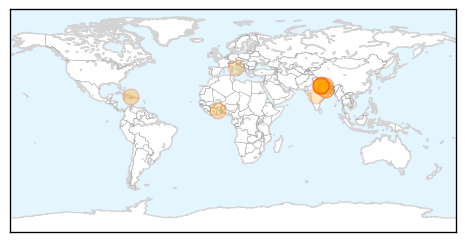

MERS
30-Day Web Trend
0 alerts, 0 warnings

30-Day Twitter Trend
1 alerts, 0 warnings

Article Locations

Article Confidences

Top Articles:
Top Tweets:
-
No tweets found for Aug 17, 2014
Cholera
30-Day Web Trend
0 alerts, 3 warnings

30-Day Twitter Trend
7 alerts, 0 warnings

Article Locations
Article Confidences

Top Articles:
- 0.997
- Cholera Fears As Floods Devastate Nepal
- 0.982
- Need to adopt strategies to fight Ebola outbreak – Minister
- 0.896
- Scores missing in Nepal as heavy rains spark cholera fears
- 0.865
- Nepal fears cholera outbreak after floods, landslides kill at least 85
- 0.846
- the edge of knowledge
- 0.802
- More than 100 missing after floods in Nepal
- 0.802
- travel and tourism in Nepal comes to a standstill Danger: ...
- 0.772
- Nepal floods kill at least 97 as cholera fears rise
- 0.733
- Nepal floods kill at least 85, raise cholera fears
- 0.714
- Fighting Ebola the Medieval Way
- 0.689
- Nepal floods kill at least 89 as cholera fears rise
- 0.638
- Nepal floods kill at least 89 as cholera fears rise
- 0.603
- Over 100 dead in Nepal and India floods
- 0.600
- Nepal floods kill at least 85
- 0.599
- Malaysia General Business Sports and Lifestyle News
- 0.592
- Nepal flood deaths spark fears of cholera
- 0.592
- Nepal floods kill at least 85 as cholera fears raised
- 0.554
- Monsoon crisis in North India: At least 28 killed and 10,000 made homeless as flash floods strike eastern UP
Top Tweets:
- 0.514
- RT: Ghana Cholera Outbreak At 'Staggering' Level, Over 3100 Infected - http://t.co/F64JsoRFK3